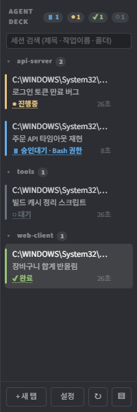
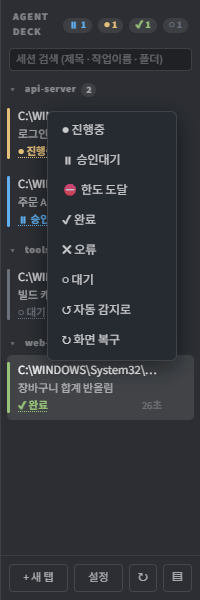
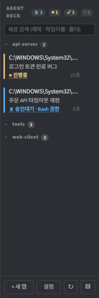
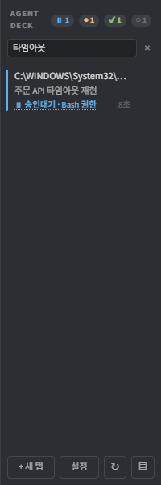
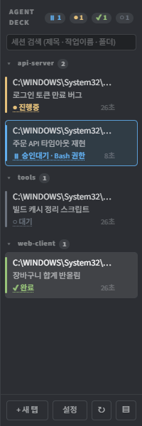
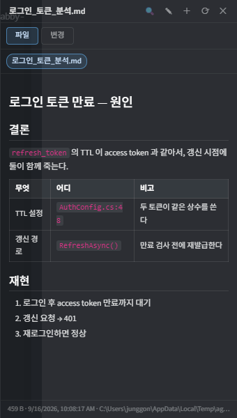
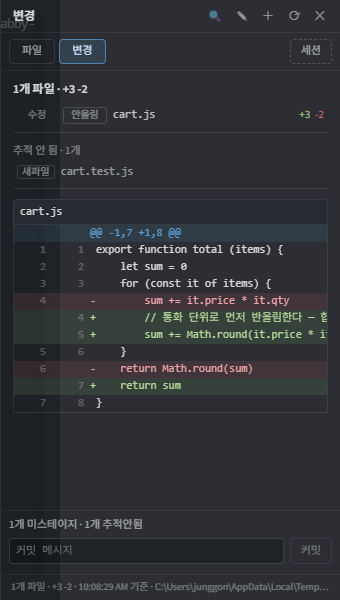
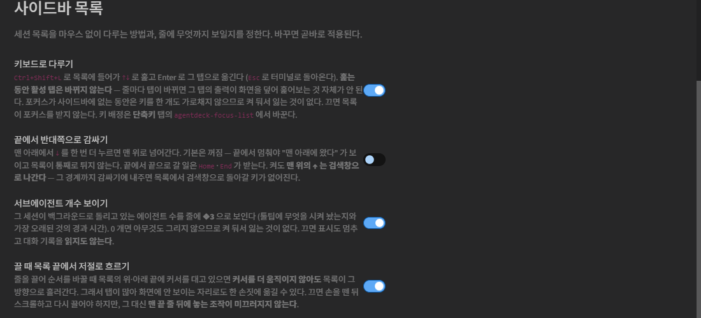

터미널에서 에이전트 CLI(Claude Code · Codex · Gemini)를 여러 개 돌릴 때, 어느 세션이 지금 무슨 일을 하고 있고 무엇을 기다리는지 한눈에 보기 위한 도구다. 설치부터 탭 편집·예약 표시·에이전트 통신·설정까지 안내한다. 일부 그림은 이전 버전의 화면이며, 조작 방법은 본문을 기준으로 한다.
agentdeck을 찾아 설치하고 Tabby를 재시작한다.Windows에서 검증했다. 새 버전 안내가 나오면 업데이트 여부를 선택한다. 변경 내용은 전체 변경 이력에서 확인한다.
화면은 두 덩이다. 왼쪽은 터미널, 오른쪽은 세션 목록(사이드바). Tabby 순정 탭바는 감추고 이 사이드바가 탭 관리를 대신한다 — 탭이 여러 개일 때 가로 탭바로는 "무슨 작업인지" 를 담을 자리가 없기 때문이다.

⏸1 ●1 ✔1 ○1 은 상태별 개수다.
각 세션이 지금 어떤 상태인지 6가지로 표시한다.
| 표시 | 뜻 | 언제 |
|---|---|---|
| ● 진행중 | 에이전트가 일하고 있다 | 출력이 계속 나오는 중 |
| ⏸ 승인대기 | 사람을 기다린다 | 도구 사용 허가를 물어봄 |
| ⛔ 한도 도달 | 사용량 한도에 걸렸다 | 언제 풀리는지도 함께 |
| ✔ 완료 | 작업이 끝났다 | 응답을 마치고 멈춤 |
| ✘ 오류 | 실패했다 | 오류 문구가 나옴 |
| ○ 대기 | 아무 일도 안 한다 | 일정 시간 출력 없음 |
승인대기에는 무엇을 승인해야 하는지가 같이 붙는다. 위 그림의 두 번째 줄이
⏸ 승인대기 · Claude needs your permission to use Bash 로 나오는 것이 그 예다.
창을 여러 개 띄워 놓고 다른 일을 하다 돌아왔을 때, 어느 세션이 왜 멈춰 있는지 눌러 보지 않고 안다.

세션을 작업 폴더(프로젝트) 단위로 묶는다. 위 그림의 api-server
tools web-client 이 그것이고, 헤더 옆 숫자는 그 그룹의 세션 수다.
헤더를 누르면 접힌다.

tools 와 web-client 을 접었다. 접은 상태는 다음 기동에도 유지된다.cd 를 해도 그룹이 안 바뀐다.
세션이 사는 동안 소속이 흔들리면 "방금 그 줄이 어디 갔지" 가 되기 때문이다.
그룹이 하나뿐이면 헤더를 아예 그리지 않으므로, 한 프로젝트만 쓸 때는 화면이 예전과 같다.
사이드바 맨 위 검색창에 치면 제목 · 작업 이름 · 작업 폴더를 한 번에 좁힌다.
상태 칩(⏸1 ●1 …)을 누르면 그 상태만 남는다.

회귀 로 검색해 해당 작업 하나만 남았다. Esc 나 ✕ 로 해제한다.Ctrl+L 로 목록에 들어가면 마우스 없이 훑을 수 있다.
| 키 | 하는 일 |
|---|---|
| ↑ ↓ | 줄 사이 이동. 활성 탭은 바뀌지 않는다 |
| Home End | 첫 줄 / 마지막 줄 |
| Enter | 그 세션으로 옮긴다. 그룹 헤더면 접기/펴기 |
| Esc | 검색·필터가 있으면 먼저 그것을 지운다. 없으면 터미널로 복귀 |
| Tab | 검색창으로 |

탭 제목과 별명은 별개다. 별명은 작업 프로젝트를 바탕으로 자동 배정하며 열린 동안 유지한다. 탭을 닫으면 그 번호를 새 탭이 가장 작은 번호부터 재사용한다. 원하는 이름은 편집 팝업에서 지정한다.
줄을 드래그해 순서를 바꾼다. Ctrl+1~9는 현재 보이는 순서의 1~9번째 탭으로 이동하며 별명에 붙은 숫자를 뜻하지 않는다. 탭 생성에는 9개 제한이 없고, 10번째 이후는 목록을 스크롤해 선택한다.
| 항목 | 쓰는 방법 |
|---|---|
| 탭 제목 | 탭을 알아볼 제목. 최대 160자. |
| 별명 | 에이전트를 구분할 이름. 최대 40자이며 다른 열린 탭과 중복할 수 없다. |
| 작업 이름 | 현재 하는 일의 설명. 최대 500자. |
| 상태 | 진행중·승인대기 등의 표시를 직접 지정하거나 자동 감지를 선택한다. 표시를 바꿔도 에이전트 작업을 실행하거나 중단하지는 않는다. |
| 예약 건수 | 자동 집계를 끄면 0~999999의 정수를 입력할 수 있다. 실제 예약을 만들거나 취소하는 기능은 아니다. |
제목·별명·수동 예약 건수는 리로드 후에도 유지한다. 편집 중 도착한 자동 갱신은 해당 항목을 직접 수정하지 않았다면 보존한다.
에이전트가 만든 문서·이미지·표·코드를 터미널 옆에서 그대로 본다. 화면에 찍힌 파일 경로를 스스로 주워 띄우므로, 따로 열라고 시키지 않아도 된다.

| 무엇 | 어떻게 |
|---|---|
| 파일 끌어다 놓기 | 패널에 놓으면 열린다. 터미널 위에 놓으면 「패널에 띄우기 / 경로 붙여넣기」를 물어본다 |
| 고쳐 저장 | ✎ 로 편집, Ctrl+S 로 저장. BOM·개행을 원본대로 되돌린다 |
| 찾기 | Ctrl+F |
| 새 파일 | ＋ 에 없는 경로를 넣고 Enter 두 번 — 만들고 편집으로 들어간다 |
| 닫아 두고 일하다 열면 | 그때까지 건드린 파일이 칩으로 쌓여 있고 본문은 가장 최근 파일이다 (변경 을 보고 있었으면 diff 를 다시 읽는다) — 설정 → 미리보기 패널 → 문서 패널에 읽어두기(기본 켬) |
| 저절로 열리게 하려면 | 설정 → 미리보기 패널 → 패널 자동으로 열기 를 켠다 (기본 꺼짐 — 여닫기는 사람 몫). 읽어두기 를 끄면 아무것도 자동으로 하지 않는다 |
같은 패널의 변경 탭이 그 세션 작업 폴더의 git diff 를 보여준다.
누가 고쳤는지와 무관하다 — 에이전트가 고친 것이든 사람이 고친 것이든 작업트리 상태를 그대로 본다.

2개 파일 · +192 -16, 그 아래 파일 목록(추적 안 된 새 파일 6개 포함),
그리고 줄번호가 붙은 diff. 맨 아래는 커밋 메시지 입력창이다.
| 무엇 | 어떻게 |
|---|---|
| 스테이지 | 파일 왼쪽 딱지를 누르면 git add / 취소 |
| 커밋 | 메시지를 적고 커밋 — 두 번 눌러야 실행된다(첫 누름은 확인) |
파일:라인 참조 | diff 줄을 누르면 그 위치가 터미널에 입력된다. Shift+클릭 = 범위 |
한글을 치는 중에 Home · End · Shift+Enter 를 누르면 조합 중이던 마지막 음절이 커서를 따라가거나 새 줄로 내려가는 문제가 있었다. 입력이 확정되기를 기다린 뒤에 키를 보내도록 고쳐 두었다.
| 키 | 하는 일 |
|---|---|
| Ctrl+Enter · Shift+Enter | 줄바꿈(보내지 않고 다음 줄) |
| Ctrl+V | 붙여넣기. 클립보드에 이미지만 있으면 이미지로 붙인다 |
| 우클릭 | 선택이 있으면 복사, 없으면 붙여넣기. 길게 누르면 메뉴 |
사이드바 설정 버튼 → AgentDeck 항목.

자주 건드릴 만한 것만 추리면:
| 항목 | 기본 | 뜻 |
|---|---|---|
| 키보드로 다루기 | 켜짐 | Ctrl+L 목록 조작 |
| 끝에서 반대쪽으로 감싸기 | 꺼짐 | 맨 아래에서 ↓ 가 맨 위로 |
| 서브에이전트 개수 보이기 | 켜짐 | 줄에 ❖3 |
| 끌 때 목록 끝에서 저절로 흐르기 | 켜짐 | 드래그 자동 스크롤 |
| 프로젝트로 묶기 | 켜짐 | 세션 그룹 |
| 탭 별명 | 자동 배정 | 열린 탭의 이름 유지, 닫힌 번호 재사용. 우클릭 → 편집으로 변경 |
| 경과 시간 표시 | 켜짐 | 줄 오른쪽 2분 |
❖3)는 그 세션이 백그라운드로 돌리는 에이전트 수다.
대화 기록에서 띄운 것과 끝난 것을 대조해 세므로 훅이 알려주지 않아도 맞는다.
줄에 마우스를 올리면 무엇이 도는지와 가장 오래된 것의 경과가 나온다.
| 키 | 하는 일 |
|---|---|
| Ctrl+T | 작업 루트에 새 탭 (작업 루트 프로필 사용) |
| Ctrl+1 … 9 | 고정 번호 1~9로 이동 |
| Ctrl+L | 세션 목록에 포커스 / 같은 키로 터미널 복귀 — 이어서 ↑↓ 이동, Enter 선택, Esc 나가기 |
| Ctrl+W | 지금 탭 닫기 (목록이 키보드를 가졌으면 포커스 줄) |
| Ctrl+O | 미리보기 패널 여닫기 |
| Ctrl+R | 화면 복구 (↻ 와 같다. 탭 이름은 줄 더블클릭으로 변경) |
| Ctrl+S · Ctrl+D | 패널을 좌우 / 위아래로 분할 (Tabby 순정) |
| Ctrl+Q | 포커스된 분할 패널 닫기 (Tabby 순정 close-pane, 비어 있을 때 채워 준다) |
| Ctrl+Enter · Shift+Enter | 줄바꿈 |
| Ctrl+V | 붙여넣기(이미지 포함) |
| 우클릭 | 선택이 있으면 복사, 없으면 붙여넣기. 길게 누르면 컨텍스트 메뉴 |
| Ctrl+F | 미리보기 패널 안에서 찾기 |
| Ctrl+S | 패널에서 편집 중 저장 |
배정되지 않은 것은 둘 — agentdeck-toggle(사이드바 / 4:3 즉시 on-off)과
agentdeck-view-mode(파일 ↔ 변경).
설정 → AgentDeck → 단축키에서 바꾼다 — Tabby 순정이나 AgentDeck 이 이미 쓰는 키면 적용 전에 무엇과 겹치는지 알려 준다. Tabby 설정 → 단축키(agentdeck-)로도 된다.
TUI 가 깨져 보이면 사이드바 ↻ 를 누른다(또는 줄 우클릭 → 화면 복구).
지우고 다시 그리게 한다. 설정에서 자동 복구를 켜면 깨짐을 감지해 알아서 처리한다.
설정 → 문제 신고 → 모으기 를 누르면 진단 파일 묶음(zip)이 만들어진다.
버전·환경·설정·예외 기록이 들어간다. 터미널에 찍힌 내용은 기본적으로 빠진다 —
코드가 그대로 들어가는 파일이라, 보내는 사람이 명시적으로 켤 때만 담는다.
그 zip 을 GitHub 이슈에 붙이면 된다.
Tabby 1.0.235 에는 지난 탭 복원과 얽힌 문제가 있다. 설정에서 기동 시 탭 복원 끄기를 켜면 해결된다 — 복원되는 건 셸뿐이고 그 안의 에이전트 세션은 이미 죽어 있어 어차피 의미가 없다.
예약이 있으면 해당 탭에 예약된 작업 N건이 표시된다. 자동 집계는 연결된 Claude 세션의 성공한 예약 생성·삭제·목록 조회·실행 기록을 읽는다. 일회성 예약은 실행 후 목록에서 빠지고 반복 예약은 남는다. 분할 탭에서는 그 탭에 연결된 세션만 합산한다.
다른 예약 도구나 기록이 없는 예약은 자동으로 확인할 수 없다. 이때 우클릭 → 편집에서 자동 집계를 끄고 건수를 직접 적는다. 실제 예약 변경은 예약을 만든 에이전트나 도구에 요청해야 한다. 이후 새 예약 이벤트가 확인되면 자동 집계로 돌아온다.
예약이 남은 탭을 닫으면 확인창이 뜬다. 표시 건수를 수동으로 0으로 바꿔도 실제 예약이 확인되면 닫기 확인은 유지된다. 서브에이전트 수 ❖N와 예약 건수는 서로 다른 값이다.
탭이 보인다는 것만으로 통신 준비가 끝난 것은 아니다. 수신 알림을 켜면 입력 가능한 대기·완료 탭에 안내를 넣으며, 작업·타이핑·한글 조합 중에는 기다린다. 알림 입력 성공도 수신 확인은 아니다. 수신 알림 설정을 참고한다.
현재 열린 탭 검색과는 별도다. 대소문자를 구분하지 않고 입력 문자열 그대로 찾으며, 도구 출력·시스템 안내는 제외한다. 검색은 로컬에서 실행하므로 Node.js가 PATH에 있어야 한다. MCP 연결이나 AI 요청은 필요 없다. 검색 범위와 저장 안내.
사이드바 아래 계정명을 누르면 현재 탭과 같은 서비스의 계정이 나온다. +에서 이름과 전체 이메일 등을 입력해 추가한다. 처음 로그인하거나 인증이 만료되면 브라우저에서 선택한 계정의 로그인과 연결 승인을 마친다. 목록에서 삭제해도 실행 중인 CLI가 로그아웃되지는 않는다. 계정 전환·저장 방식 전체 안내.
설정 → AgentDeck → 저장 경로에서 계정·Claude·Codex 데이터 폴더를 정한다. 경로 변경은 Tabby 재시작 후 적용되며 기존 파일은 자동 이동하지 않는다. 기록을 유지하려면 세션을 종료하고 기존 데이터를 새 폴더에 복사한 뒤 재시작한다. 저장 위치 변경 절차.
새 탭의 시작 폴더는 작업 루트 프로필에서 정한다. 프로필 삭제는 열린 탭을 닫지 않는다. Windows 창 자체는 상단 제목 표시줄로 이동한다. 작업 루트와 창 이동.
전체 설정값은 전체 레퍼런스, 버전별 변경 사항은 전체 변경 이력과 GitHub Releases에서 확인한다.